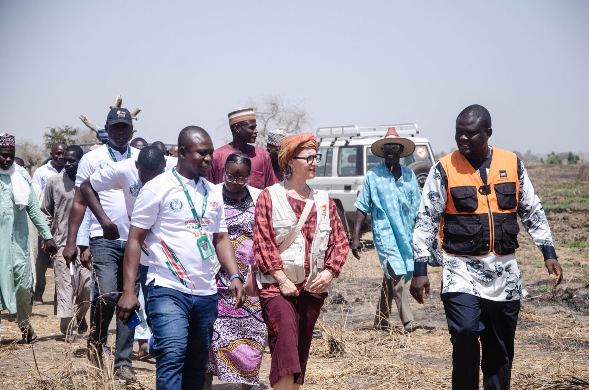
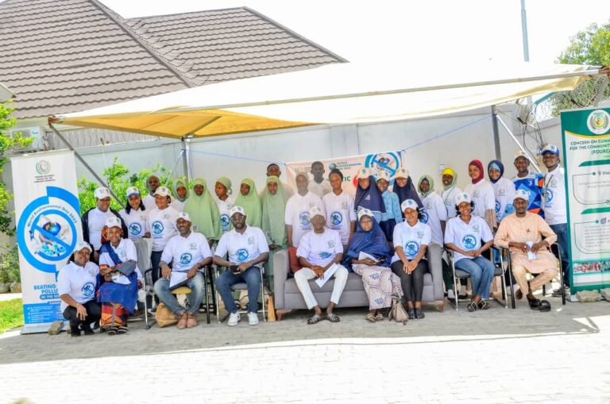
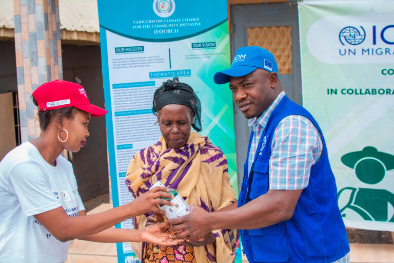
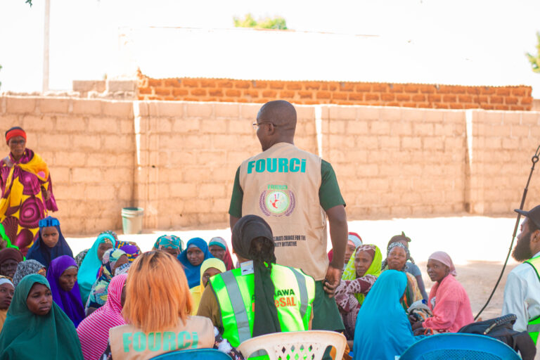
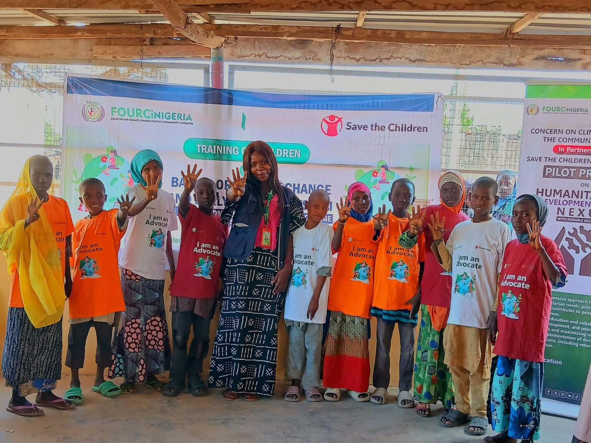

Education
Education
Our work
Resources & projects
Programmes, events and initiatives that bring FOURCi’s mission to life across north-east Nigeria.
Projects & activities
Seven initiatives, one mission
Ask us about any project and our team will share details, reports and ways to take part.
Education Resilience
ResilienceEnhancing the Resilience of Conflict Affected Population in Adamawa
Ask about this project
AdvocacyWorld Environment Day, Maiduguri 2025
Ask about this project Gender & Peace
Gender & PeaceEmpowering Women in Peace-Building through Climate Action
Ask about this project
HumanitarianStrengthening the Resilience of Crisis Affected Population in Adamawa
Ask about this project
GreeningGreening Adamawa State, FOURCi x ACReSAL
Ask about this project Nexus pilot
Nexus pilotHumanitarian Development & Peace Nexus Pilot Project
Ask about this projectFOURCi organisation profile
Our full profile with programmes, approach and track record (PDF, about 32 MB).
Procurement
Become a FOURCi-qualified vendor
We’re inviting suppliers and service providers to register and pre-qualify for upcoming opportunities, from agricultural kits and tree seedlings to printing, media and catering services.
How to register
Have a project in mind?
We welcome partnerships with institutions, donors and communities that share our commitment to climate resilience.